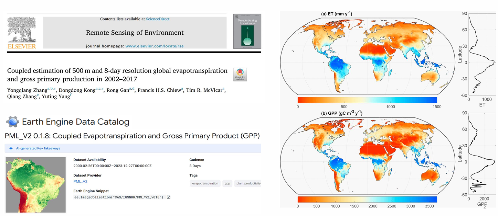
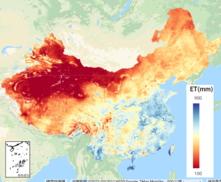
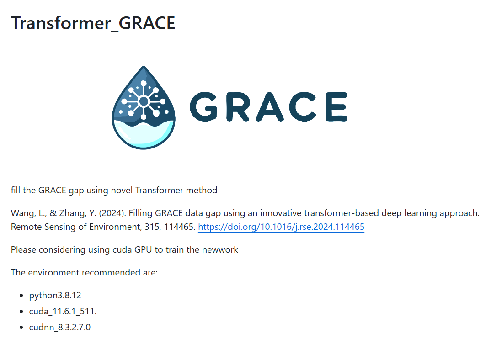

Data

PML_v2
Description: Global 2002.07 to near now; 8 day 0.05° for TPDC & 500m for GEE
How to download:
- 500m: Google Earth Engine
- 0.05°: 国家青藏高原科学数据中心
How to cite:
- [1] Zhang, Y., Peña-Arancibia, J.L., McVicar, T.R., Chiew, F.H.S., Vaze, J., Liu, C., Lu, X., Zheng, H., Wang, Y., Liu, Y.Y., Miralles, D.G., Pan, M., 2016. Multi-decadal trends in global terrestrial evapotranspiration and its components. Sci. Rep. 6, 19124. https://doi.org/10.1038/srep19124
- [2] Zhang, Y., Kong, D., Gan, R., Chiew, F.H.S., McVicar, T.R., Zhang, Q., & Yang, Y. (2019). Coupled estimation of 500m and 8-day resolution global evapotranspiration and gross primary production in 2002-2017. Remote Sensing Environ. 222, 165-182. https://doi.org/10.1016/j.rse.2018.12.031

PML_v2-china
Description: China daily 2000.02.26-2020.12.31 500m
How to download:
How to cite:
- [1] He, S., Zhang, Y., Ma, N., Tian, J., Kong, D., & Liu, C. (2022). A daily and 500 m coupled evapotranspiration and gross primary production product across China during 2000–2020, Earth Syst. Sci. Data., https://doi.org/10.5194/essd-2022-183

GRACE-transformer-gap
Description: Global gap filling of GRACE CSR RL06 2002-near now; 0.25°
How to download:
- Single month data: Figshare
- Google Drive
- BaiduNetDisk (password: ancc)
How to cite:
- [1] Wang, L., & Zhang, Y. (2024). Filling GRACE data gap using an innovative transformer-based deep learning approach. Remote Sensing of Environment, 315, 114465. https://doi.org/10.1016/j.rse.2024.114465